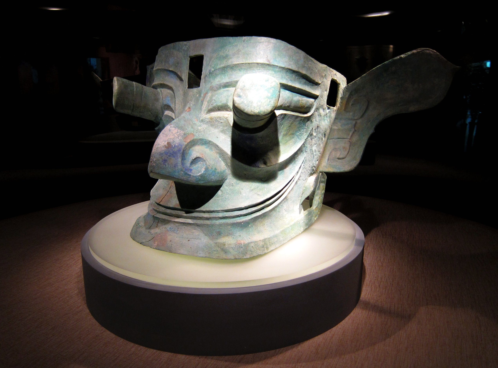

商代晚期 / 青铜

SANXINGDUI
让文物，讲述时间的故事。
四川 · 广汉在这里，重新认识古蜀
一片土地，
一段惊艳世界的文明。
成都平原北部，鸭子河南岸，三星堆的故事在这里展开。城墙、宫殿基址与埋藏坑中的珍贵器物，勾勒出古蜀先民生活与精神世界的一角。
它与商周时期的中原文明既有联系，又展现出鲜明的地方特色。高大的青铜人像、奇异的面具与繁复的神树，让我们看到中华文明多元一体的丰富面貌。
4,500年
遗址历史可追溯至约
12km²
遗址分布面积约
古蜀
长江上游的文明篇章
遗址年代约距今4500至2900年；下方代表青铜器多属商代晚期。
从泥土中，重见天日
一场仍在继续的发现
从偶然发现玉石器，到多学科携手考古，古蜀的轮廓渐渐清晰。
考古笔记
每一件重见天日的器物，
都让历史多了一种可能。
以器物为线索
在这里，与千年相遇。
目光、姿态与纹样，是古蜀人留给今天的语言。点开一件文物，仔细看看。
超越想象的古蜀面孔
商代晚期 / 青铜
商代晚期 / 青铜与黄金
商代晚期 / 青铜
商代晚期 / 黄金
把想象，铸成青铜
一树通天，
万物有灵。
三层树枝，九只神鸟，蜿蜒而下的龙。古蜀人将花、鸟、龙与树连接在一起，铸成高近四米的青铜神树。
它让人联想到古代神话中的扶桑与建木。神树是否承担沟通天地的礼仪功能？这是研究者提出的解释，仍需要更多考古证据。
3.96米一号神树现高
9只枝头上的神鸟
答案之外，仍有想象
未知，让探索继续。
文物提供线索，考古不断求证。
关于三星堆，我们还想知道更多。
保持好奇，也尊重证据。
以下解释属于研究观点，
不能视为已证实的历史事实。
为什么是“纵目”的面孔？
突出的眼睛和夸张的双耳，体现了独特的造型观念。有学者将其与古籍中蚕丛“纵目”的记载联系起来，但这层对应关系尚无定论。
线索：青铜面具形制与古代文献珍贵的文物，为什么被埋入坑中？
器物的焚烧、破碎与集中掩埋现象，使研究者关注它们可能具有的祭祀与礼仪意义。埋藏的具体过程、动机和仪式细节，仍有待进一步研究。
线索：坑内器物的状态与层位关系古蜀文明后来去了哪里？
成都金沙遗址出土的金器、玉器与青铜器，显示出与三星堆之间的文化联系。古蜀社会如何变化，三星堆与金沙如何衔接，是持续研究的重要课题，不能简单理解为文明突然消失。
线索：三星堆与金沙的器物比较有些相遇，跨越三千年。